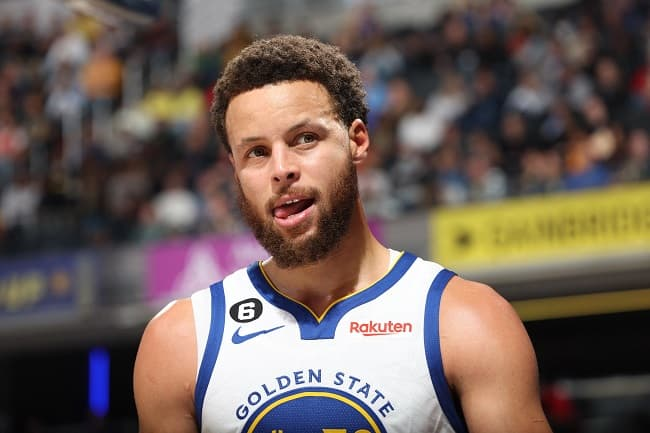
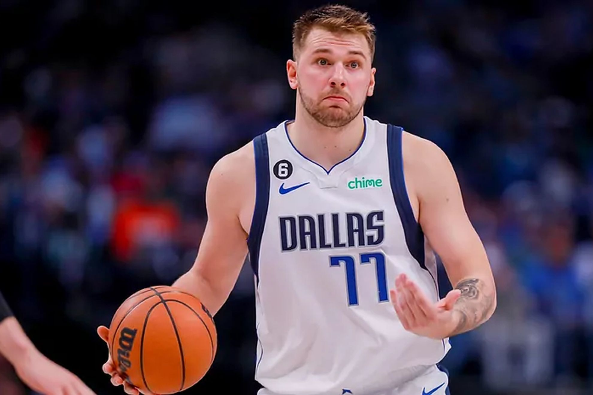
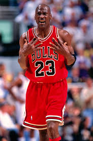

BASQUETE
O basquete foi criado em 1891, pelo professor canadense James Naismith. O objetivo inicial foi entreter os alunos da Springfield College, colégio internacional da Associação Cristã de Moços (ACM), durante o rigoroso inverno de Massachussets, nos Estados Unidos.
Stephen Curry

É um basquetebolista norte-americano que atua como armador.
Ele atua no time Golden State Warriors/4x Campeão da NBA: 2015, 2017, 2018, 2022;
Luka Dončić

Luka Dončić (Ljubljana, 28 de fevereiro de 1999) é um jogador de basquete esloveno, que joga atualmente no Dallas Mavericks, na NBA.Foi escolhido pelo Atlanta Hawks na 3ª escolha no Draft da NBA de 2018, em seguida trocado para os Dallas Mavericks por Trae Young.
LeBron James

LeBron Raymone James (Akron, 30 de dezembro de 1984) é um basquetebolista norte-americano que atua como ala pelo Los Angeles Lakers
Michael Jordan

Michael Jeffrey Jordan (Nova Iorque, 17 de fevereiro de 1963) é um empresário e ex-basquetebolista estadunidense que atuava como ala-armador. Considerado por muitos como o melhor jogador de basquete de todos os tempos, é considerado também como um dos mais importantes desportistas masculinos da história.[1][2][3] Atualmente é proprietário da 23XI Racing, equipe da NASCAR, onde seus carros levam os números 23, pilotado por Bubba Wallace, e 45, pilotado por Kurt Busch em 2022 e Tyler Reddick em 2023. Além disso, é o atual proprietário do Charlotte Hornets, equipe da NBA.
BASQUETE